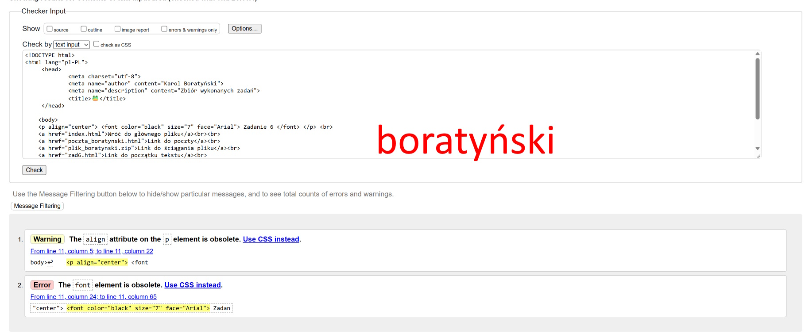
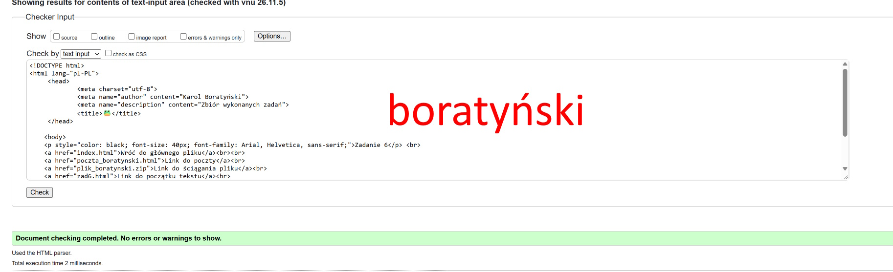

Zadanie 7
Standardy W3C to zbiór wytycznych, które określają wygląd kodu stron internetowych, aby te były przyjazne dla każdego i zgodne z możliwościami przeglądarek oraz wszelkich urządzeń z dostępem do sieci.


Zadanie 6
Zadanie 5
Zadanie 4
nazwisko ucznia imię ucznia
Boratyński Karol
Zadanie 2
Adres - Ul. Kazimierza Jeżewskiego 02-796
Ulubiony aktor - Benedict Cumberbatch
Ulubiony zespół muzyczny - Tame Impala
Pełna data urodzenia - 11 Kwiecień 2004
H2SO4
x*x=x2
Zadanie 1
Karol
Karol
Karol
Karol
Karol
Karol
Karol
:) zadowolenie
:( smutek
:O zdziwienie, zaskoczenie
:/ zdziwienie
:D wielkie zadowolenie
:P obojętność